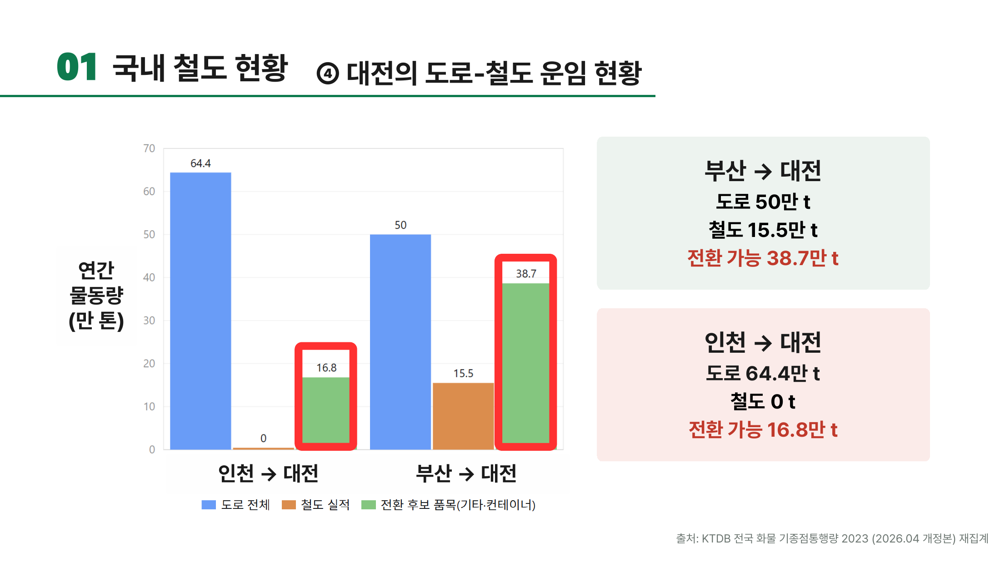
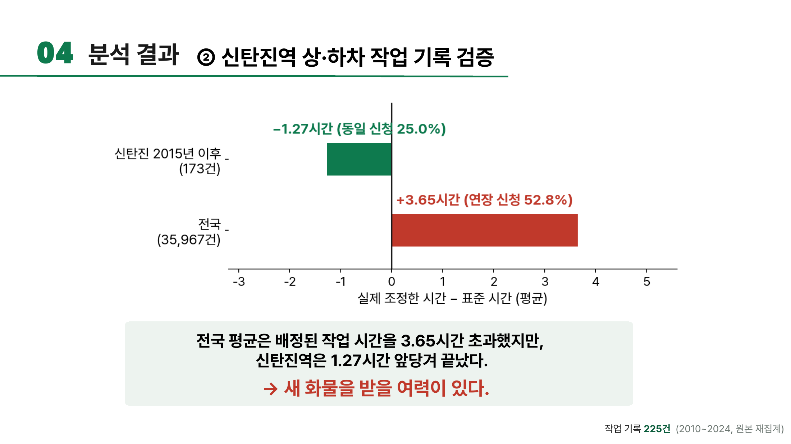
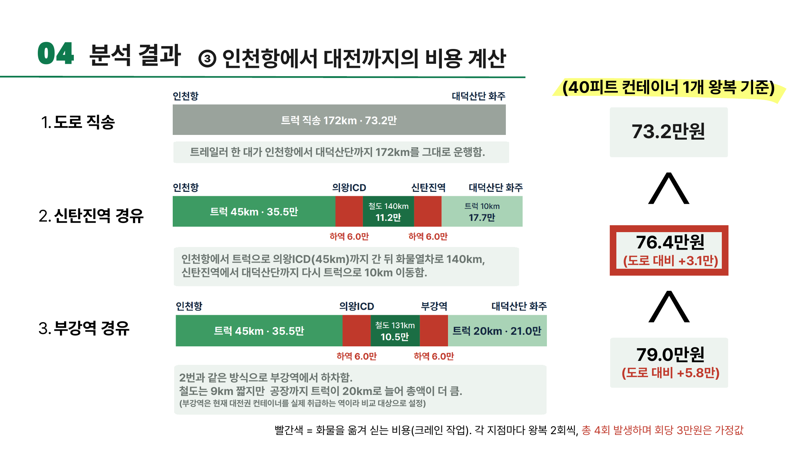
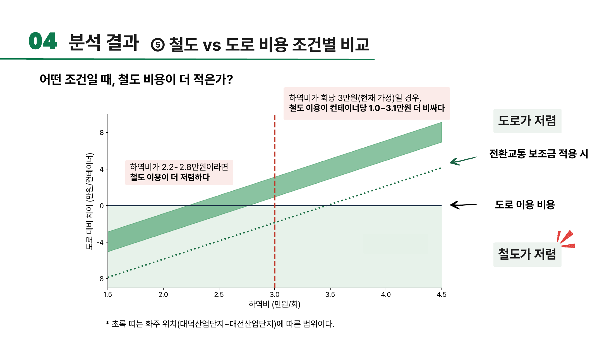

2026 물류데이터·AI 활용 및 분석 아이디어 공모전 — 팀 철들었조
문제 진단
인천·평택·당진에서 대전으로 가는 도로화물은 연 113.9만 톤이지만, 같은 구간의 철도 실적은 0톤입니다. 반면 부산권발 대전행은 철도 15.5만 톤이 실제로 쓰이고 있습니다. 서해안권만 철도가 비어 있는 이유를 찾는 것이 이 분석의 출발점이었습니다.

가설
선로·역 시설이 없어서가 아니라는 것부터 확인합니다.
철도 운임이 아니라 양끝의 트럭비·상하차비가 병목이라고 가정합니다.
도로와의 격차가 정책 지원으로 메울 수 있는 규모인지 확인합니다.
검증
데이터를 결합하기 전에 「행≠작업, 행 수≠물동량, 기록 부재≠작업 부재」라는 사전 규칙을 세웠습니다. 이 규칙이 있었기 때문에 신탄진 컨테이너 35행이 35번의 작업이 아니라 하루·한 건의 일괄 기록이라는 것을 확인할 수 있었습니다.

비용 모델
3개 경로의 왕복 총비용을 고시 운임 기준으로 계산했습니다. 신탄진 철도복합 경로의 총 763,700원 중 철도 운임은 112,000원(14.7%)에 불과합니다. 병목은 철도가 아니라 양끝의 트럭·상하차 비용입니다.

전 구간을 트럭으로 직송합니다. 현재 서해안권→대전 화물의 유일한 선택지입니다.
양끝 비용이 임계치 아래로 내려오면 철도복합이 성립합니다. 하역 작업비 기준 회당 22,150~27,600원이 그 경계입니다.
AI를 반증에 활용
결론을 완성한 뒤, AI에게 결론을 다듬게 하는 대신 반박하게 했습니다. 반박 프롬프트가 잡아낸 오류는 실제로 있었습니다.
반박 과정에서 드러난 운임 적용 오류를 고시 기준으로 다시 계산했습니다.
결합 데이터의 집계 단위 오류를 바로잡았습니다.
확률 미보정 모델 점수를 물량으로 환산한 산출물은 방어할 수 없다고 판단해 폐기했습니다.
제안
분석을 일회성 보고서로 끝내지 않고, 화주·담당자가 성립 조건을 직접 확인할 수 있는 4화면 웹 서비스로 제안했습니다.

발표 자료
본선 발표자료27장 · 2026-지정5-14
대전행 화물의 철도 전환 조건 분석 — 도로·철도 운송 경로 비용 비교
결과지표
공모전 결과
최우수상
임계단가 역산
22,150~27,600원/회
AI 반증으로 오류 정정
3건
결합한 공개데이터
11종
회고
결론을 그럴듯하게 만드는 데 AI를 쓰지 않았습니다. 결론을 반박시키고, 반박을 버티지 못한 산출물은 폐기했습니다. 제안에 실은 수치는 모두 이 과정을 거친 것들입니다.